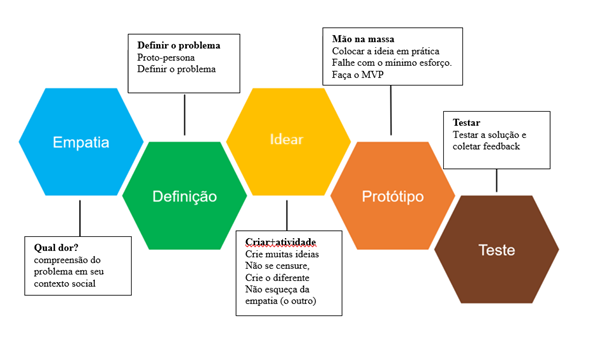

Para Tim Brown (2020, p. 7), o “Design Thinking” é “[...] uma abordagem criativa e focada na resolução de problemas e no ser humano e propicia a descoberta de soluções novas e mais eficazes”. Para Britto (2018, p. 64), o “Design Thinking” “[...] é considerado um processo para resolução de problemas complexos, desenvolvido colaborativamente no humano”.
Vale ressaltar que a metodologia “Design Thinking” não é originária da Educação, e seu vínculo primário é com design. Segundo Rocha (2018), o “Design Thinking” foi desenvolvido por Ralf Fast e David Kelly na Universidade de Stanford em 1973, e o objetivo da metodologia é gerar soluções, inovações e aprimoramentos efetivos. Para Coutinho (2010, p. 2), tal metodologia “[...] sugere que, em vez de analisar alternativas existentes, é melhor desenhar futuros alternativos que façam sentido e tragam algum significado para as pessoas”.
Tal afirmativa remente a Paulo Freire (2001a), quando este lembra que “Ensinar exige a convicção de que a mudança é possível”. Freire (2001a) discute a necessidade de intervir na realidade concreta e, por isso, o autor nos lembra da necessidade de problematizar os rios poluídos, os lixões.
Freire (2001a) compreende que a mudança é possível e a metodologia Design Thinking é inserida na educação ano de 1996 por Kiran Bir Seth fazendo uso do projeto Design for Change cujo objetivo se caractreriza pela mudança da realidade de estudantes indianos (Rocha, 2018). Segundo Rocha (2018), o Design Thinking na educação ocorre em 5 etapas:
Estas etapas serão visitas posteriormente. Antes disso, observe o resumo a seguir:
Por ser uma metodologia aberta, o “Design Thinking” é usado em diversas áreas. Brown (2020) considera que a evolução do design para o “Design Thinking” se encontra da mudança de foco. Enquanto o primeiro (design) possui foco em objetos, o segundo (Design Thinking) tem seu foco nas pessoas. O autor destaca que
A evolução do design ao Design Thinking é a história da evolução da criação de produtos à analise de relação de pessoas e produtos, e depois, da relação entre pessoas. Com efeito é impressionante avanço realizado nos últimos anos tem sido a migração de designers para solucionar problemas sociais e comportamentais, como desenvolver a disciplina para elevar um tratamento médico até o fim ou troca do junk food por comida saudável. Quando os Centros para Controle e Prevenção de Doenças procuraram a IDEO, para o desafio de lidar com a endemia de obesidade infantojuvenil, agarramos a oportunidade de aplicar essas práticas de pesquisas qualitativas a um problema social na qual poderíamos fazer a diferença (Brown, 2020, p. 48).
Neste contexto, a metodologia concentra seus esforços nas pessoas. Eis a razão do “Design Thinking” migrar para outras áreas, como Medicina, Nutrição, Agricultura, entre outras. Como dito anteriormente, uma das primeiras experiências foi com o movimento Design for Change. Aos interessados sobre esta experiência, segue link de acesso: :: Design for Change :: (dfcworld.org).
A seguir, será mostrado como ocorre o processo de Empatizar, Definir, Idear, Prototipar e Testar, definidos por Rocha (2018).
Home